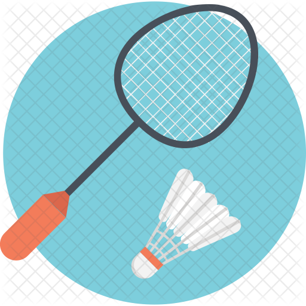

ABOUT BADMINTON
 |
Badminton is a racquet sport played by either two opposing players (singles) or two opposing pairs (doubles), who take positions on opposite halves of a rectangular court that is divided by a net. Players score points by striking a shuttlecock with their racquet so that it passes over the net and lands in their opponents' half of the court. A rally ends once the shuttlecock has struck the ground, and the shuttlecock may only be struck once by each side before it passes over the net. |
| The shuttlecock (or shuttle) is a feathered projectile whose unique aerodynamic properties cause it to fly differently from the balls used in most racquet sports; in particular, the feathers create much higher drag, causing the shuttlecock to decelerate more rapidly than a ball. Shuttlecocks have a much higher top speed, when compared to other racquet sports. Because shuttlecock flight is stubbornly affected by wind, competitive badminton is always played indoors. Badminton is also played outdoors as a casual recreational activity, often as a garden or beach game. |  |
 |
Since 1992, badminton has been an Olympic sport with five events: men's and women's singles, men's and women's doubles, and mixed doubles, in which each pair is a man and a woman. At high levels of play, the sport demands excellent fitness: players require aerobic stamina, agility, strength, speed, and precision. It is also a technical sport, requiring good motor coordination and the development of sophisticated racquet movements. |

